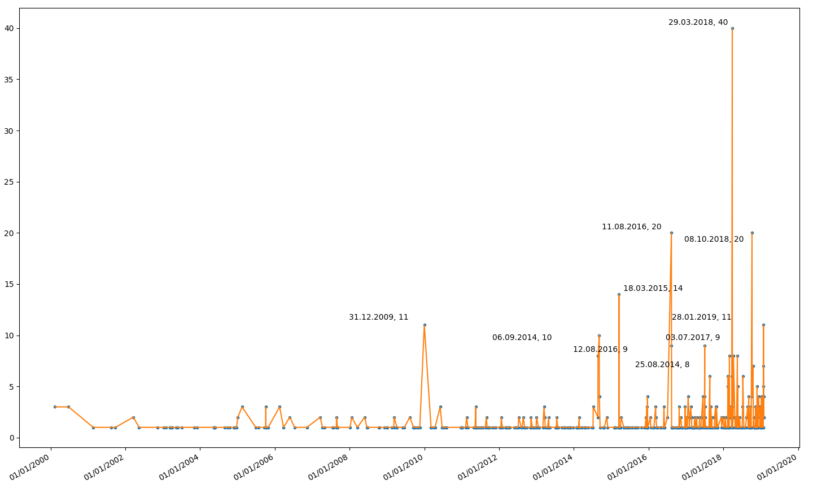

02 February 2019
Ekşi Sözlük (or “sourtimes”) is an attempt at a dictionary or a holy source of information where users can create articles or post entries just about anything which comes to mind. It was created at 1999 by Sedat ‘ssg’ Kapanoğlu with inspiration from Douglas Adams’ The Hitchhiker’s Guide to the Galaxy. It is currently the most active “dictionary” style page in Turkey, so an interesting place to look from the perspective of data science.
Somewhere around the last two years, they have blocked access without
cookies, so a simple python request will result in an
aborted connection.
>>> import requests as req
>>> r = req.get('https://www.eksisozluk.com')
(...)
requests.exceptions.ConnectionError: ('Connection aborted.', RemoteDisconnected('Remote end closed connection without response'))This is why we will use selenium to automate a
“headless” Google Chrome instance to scrape data from the website. We
will be looking at a single article, and the number of entries entered
by date. The point of interests are the dates in which the numebr of
entries are the highest. They are likely to coincide with real-life
events.
In this post I will be automating a Google Chrome browser instance. You can obviously choose another browser like Safari or Mozilla, but I have found that Chrome has the most intuitive support for browser automation. It can be downloaded from the official webpage.
Selenium is a
toolkit to automate browsers. Since we will be using Python, we
will need the Python 3 API. This package can be installed via
pip install selenium.
To automate Google Chrome using Selenium, you will also need the
chromedriver binary. The latest releases can be found at
their downloads
page. After extracting the zip file, you will have to put the
chromedriver binary somewhere in your $PATH
(for example usr/local/bin).
Beautiful
Soup is an all-powerful parser which we will use to parse HTML data.
It can be installed via pip install beautifulsoup4.
matplotlib is an awesome 2D
plotting library which we will use to visualize the data. It can
similarly be installed via pip install matplotlib.
We will use this little library to make annotations look prettier in
matplotlib (they tend to infuriatingly overlap). It can be installed via
pip install adjustText, see the GitHub page for more
information.
Ekşi Sözlük has “articles” and “entries”. We will scrape the date data from the pages, to see when an article had the most entries written to it. I will not go through all the code line by line, but some of the more crucial concepts.
To automate a “headless” Google Chrome browser instance, we will need
the absolute paths of the Google Chrome binary and the
chromedriver binary. On a macOS system, the Google Chrome
binary will likely to be located inside the application:
"/Applications/Google Chrome.app/Contents/MacOS/Google Chrome"
The chromedriver binary is wherever you have copied it in
the installation step.
The code for a simple automation is as follows:
from selenium import webdriver
from selenium.webdriver.chrome.options import Options
url = 'SOME.URL'
binary_path = "/Applications/Google Chrome.app/Contents/MacOS/Google Chrome"
chromedriver_path = "SOME/PATH"
chrome_options = Options()
chrome_options.add_argument("--headless")
chrome_options.binary_location = binary_path
driver = webdriver.Chrome(executable_path=chromedriver_path,
options=chrome_options)
driver.get(url)
print(driver.page_source)This will print the html source of the URL.
In this particular example, after some exploration, I have seen that
Ekşi Sözlük formats the entry dates in the form of
<a class="entry-date permalink" href="/entry/1">15.02.1999</a>.
To extract this using BeautifulSoup, you can do:
content = driver.page_source
soup = BeautifulSoup(content, 'html.parser')
html_dates.append(soup.find_all("a", class_='entry-date permalink'))To extract the real “date” from this string, I have used
regex. Noting that the date format is in the form
\d\d.\d\d.\d\d\d\d, you can do a re.findall()
to get the exact date part. (See Regular Expression
HOWTO).
After creating a list of the dates, you can count their number of
occurrences with a Counter(list). To find the most N
occurrences, use most_common(N). Finally you can create an
OrderedDict from this Counter object to be
able to iterate over it. (Don’t forget to import them from
collections).
To create datetime objects from the string elements of
this dictionary, you can use
datetime.datetime.strptime(date, '%d.%m.%Y')). And then to
convert it to a date object, simply add a
.date(). (See datetime
— Basic date and time types). So this will look like:
import datetime as dt
for date in dates_string:
x.append(dt.datetime.strptime(date, '%d.%m.%Y').date())Once you have a x list and an entries list
which has the number of entries entered on that date, you can finally
plot it using matplotlib.
import matplotlib.pyplot as plt
import matplotlib.dates as mdates
from adjustText import adjust_text
fig, ax = plt.subplots()
plt.plot(x, entries, '.')
plt.gca().xaxis.set_major_formatter(mdates.DateFormatter('%d/%m/%Y'))
plt.gcf().autofmt_xdate()
plt.show()Lastly, to be able to annotate the top N occurences (points of
interest) we will use the result of the most_common()
method.
top_count = 10
texts = []
counted_dates = Counter(dates)
top = counted_dates.most_common(top_count)
for i in range(top_count):
top_x, top_y = top[i]
texts.append(plt.text(mdates.date2num(dt.datetime.strptime(str(top[i][0]), '%d.%m.%Y').date()),
top[i][1], str(top[i][0]) + ', ' + str(top[i][1]), ha='right', va='top'))
adjust_text(texts)Running this script with the article for python. We get the following graph:

Sadly, the peaks of this particular graph do not correspond to real-life important events (I had thought about the Python 3 release at 3 December 2008, for example). The peak at 29.03.2018 for 40 entries corresponds to a beef between multiple users, and the one at 31.12.2009 with 20 entries correspond to a discussion about Python’s usage of whitespace. Regardless, it was still a nice exercise.
\space